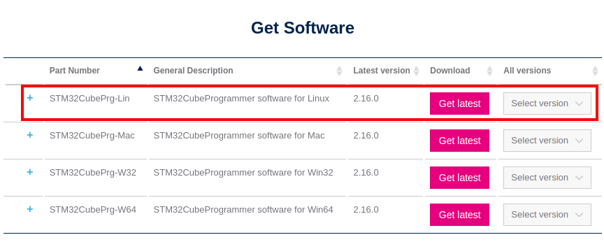
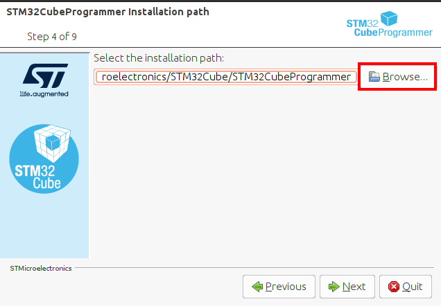
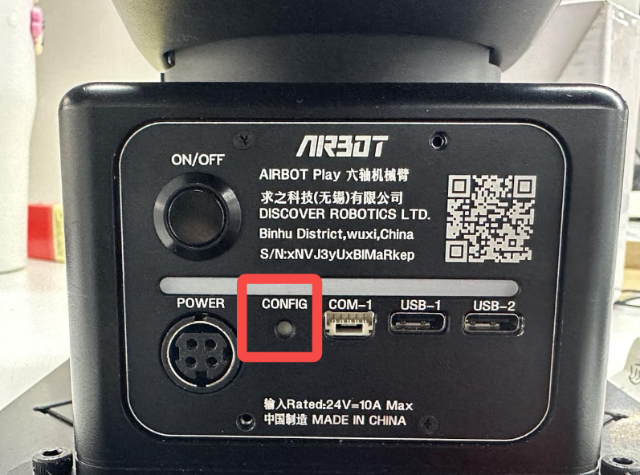
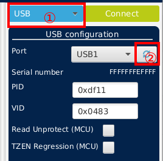
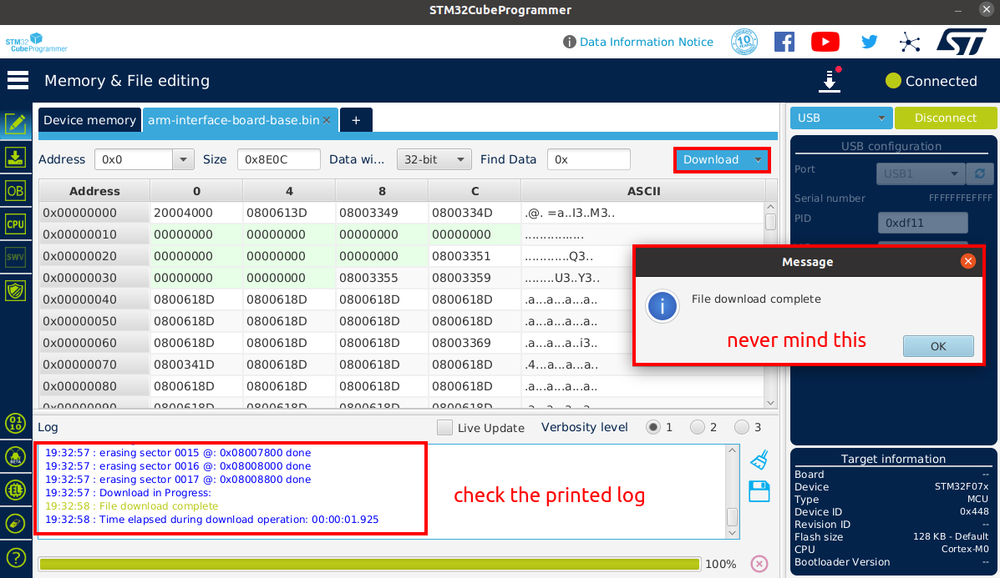

AIRBOT Play Firmware Upgrade Guide
In this tutorial, we will show the detailed operations for upgrading the firmware of AIRBOT Play.
After obtaining the SDK package, the upgrade of AIRBOT Play firmware consists of upgrading base interface board, motor controller firmware and end interface board firmware.
1. SDK Package
Please contact technical support to obtain the SDK package. After extracting the SDK package, the directory structure is as follows:
# tree 2.8.3/
.
├── CHANGELOG
├── SHA1.txt
├── firmwares
│ ├── BLDC_4_ChibiOS.bin # Motor controller firmware
│ ├── arm-interface-board-base.bin # Base interface board firmware
│ └── end # End interface board firmware for different end effectors
│ ├── arm-interface-board-end_desheng_servo.bin
│ ├── arm-interface-board-end_jodell_2_fingers.bin
│ ├── arm-interface-board-end_jodell_suction_cup.bin
│ └── arm-interface-board-end_yingshi_2_fingers.bin
└── packages
├── airbot_aloha_2.8.3-291bbb4_amd64.deb # ALOHA example package, depends on the basic control library package
├── airbot_play_2.8.3-a117c2fe_amd64.deb # Basic control library package, provides support for various interfaces
├── airbot_tools_2.8.3-291bbb4_amd64.deb # Example tools package, depends on the basic control library package
├── ros-noetic-ros-interface_2.8.3-0focal_amd64.deb # ROS Interface package, depends on the basic control library package
└── sdk-develop-python.zip
Each upgrade comes with update of both firmwares and packages. The usage of packages can be found here. The upgrade process only needs files under the firmwares directory.
2. Upgrading Base Interface Board
2.1 Preparing environment: STM32CubeProgrammer
Download STM32CubeProgrammer version 2.15 from here:
Version 2.15 is mandatory
Versions higher than 2.15 have known issues which would causes HARDWARE DAMAGE of the interface board.
Verbose steps

click on Select Version choose version 2.15, then click Accept and Download as Guest in sequence.
Extract and install the downloaded package with the following command:
Store the installation path as CUBE_INSTALL_PATH environment variable: (replace /path/to/installation with the actual installation path)
Verbose steps
In the pop-up window, click Next, Next select I accept the terms of the license agreements then click Next

You can customize the installation path here. After selecting the path, click Next. If the path does not exist, a pop-up window will prompt that the target folder will be created. Click OK.
Then, check I have read and understood the ST Terms of Use and keep clicking Next until the installation completes, then click Done.
2.2 Burn Firmware
-
Detach the power supply and USB cable from the base and wait for 20 seconds.
-
Press DOWN the CONFIG button with a thin tool and then attach a USB Type-C cable to USB-2 port. Make sure power supply is NOT attached.
CONFIG button on the base

-
Connect the other end of the USB Type-C cable to the computer with STM32CubeProgrammer installed.
-
Suppose STM32CubeProgrammer is installed at
CUBE_INSTALL_PATH. Launch STM32CubeProgrammer withInitial screen for STM32CubeProgrammer

-
Select
USBas the communication method, and click the refresh button. You should seeUSB1appears.
USB1 not showing?
If the USB1 option is now showing, please make sure the CONFIG button is pressed DOWN and the USB cable is firmly attached to the base and the computer
-
Click
Connect -
Select the firmware:
arm-interface-board-base.bininside the upgrade package:
-
After the firmware is loaded, click
Downloadto burn firmware. It takes around 10 seconds, with a green line File download complete indicating successful burning.
-
Click
OK. You can close STM32CubeProgrammer now. -
Detach the USB cable from the base and THEN use a thin tool to press UP the config button. The upgrade of the base interface board is complete now.
3. Upgrading Motor Controller Firmware
The 1st to 3rd motor controllers are connected to the base interface board. The firmware of the motor controller can be upgraded by running the following commands.
Power Supply
Make sure the power supply is attached to the AIRBOT Play when upgrading the firmware.
Install airbot_play first
Before upgrading the motor controller firmware, the airbot_play package should be installed first. See here.
Suppose only one AIRBOT Play arm is connected to the computer (which makes the device name can0), run the following command to upgrade the firmware for the first motor:
# Upgrade the firmware for the first motor of can0 device
python -m airbot_play.iap_burn [<path_to_firmware>] -m can0 -i 1
Firmware Selection
Please select the correct firmware for the end effector connected to the AIRBOT Play. The firmware for the motor controller is BLDC_4_ChibiOS.bin in the firmwares directory of the SDK package.
Once the wrong firmware is burned, the whole AIRBOT Play would fail to work AT ALL. If the wrong firmware has already been burnt, please contact technical support for further assistance.
Replace <path_to_firmware> with the path to the firmware file BLDC_4_ChibiOS.bin in the SDK package.
Program Output
# python iap.py BLDC_4_ChibiOS.bin -i 1 -m can0
Device name: vesc-motor-control
Device detected.
Version: 2.6.0
Request successful. Starting data transmission.
Transmitting data... ━━━━━━━━━━━━━━━━━━━━━━━━━━━━━━━━━━━━━━━╸ 100% 0:00:00
End request successful. Data transmit finished.
Please wait for the program auto close and don't shutdown the power supply now.
Burning firmware... ━━━━━━━━━━━━━━━━━━━━━━━━━━━━━━━━━━━━━━━━ 100% 0:00:00
Burn finished.
Version: 2.7.0
Time elapsed: 40.14004611968994 seconds
The version of the firmware will be displayed in the output. If the version is updated to the latest version, the upgrade is successful.
Then, run the following commands to upgrade the firmware for the 2nd and 3rd motor:
# Upgrade the firmware for the 2nd motor of can0 device
python -m airbot_play.iap_burn [<path_to_firmware>] -m can0 -i 2
# Upgrade the firmware for the 3rd motor of can0 device
python -m airbot_play.iap_burn [<path_to_firmware>] -m can0 -i 3
Note
If the end effector (AIRBOT Gripper or AIRBOT Demonstrator) is connected, the firmware of the controller can be updated by running the following command:
4. Upgrading End Interface Board
Firmware Selection
Please select the correct firmware for the end effector connected to the AIRBOT Play. The firmware files are located in the end directory of the SDK package.
Once the wrong firmware is burned, the whole AIRBOT Play would fail to work AT ALL. If the wrong firmware has already been burnt, please contact technical support for further assistance.
Power Supply
Make sure the power supply is attached to the AIRBOT Play when upgrading the firmware.
Install airbot_play first
Before upgrading the motor controller firmware, the airbot_play package should be installed first. See here.
The end interface board firmware can be upgraded by running the following command:
# Upgrade the firmware for the end interface board of can0 device
python -m airbot_play.iap_burn [<path_to_firmware>] -m can0 -i 8
Replace <path_to_firmware> with the path to the firmware file arm-interface-board-end_*.bin in the SDK package. Any one of the four end interface board firmware can be selected.